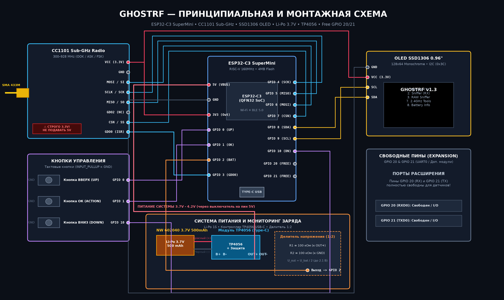

[ SUB-GHZ & 2.4 GHZ РАДИОМУЛЬТИТУЛ & ПАКЕТ ПО ]
Портативный RF-Мультитул Sub-GHz + 2.4 ГГц на ESP32-C3 + OLED + CC1101
Компактный аппаратный мультитул для захвата, анализа, эмуляции радиосигналов и аудита беспроводных систем. Поддерживает Sub-GHz (300–928 МГц CC1101: декодер KeeLoq, Came, Nice, RAW Sniffer, 32-кан. спектроанализатор) и 2.4 ГГц (ESP32-C3: Wi-Fi сканер, 13-кан. гистограмма, деаутентификатор, BLE радар, BLE/Beacon спамер), мониторинг Li-Po АКБ (GPIO 2), нативное Android-приложение (BLE 5.0), кроссплатформенную студию на Qt 6 и браузерную прошивку WebSerial.
[ INSTALL: ВЕБ-ПРОШИВКА (WEBSERIAL) ]
[ APK: ANDROID СТУДИЯ (6.6 МБ) ]
[ FIRMWARE: ОБРАЗ .BIN (1.54 МБ) ]
[ ДИАПАЗОН ЧАСТОТ ]
300–928 МГц CC1101 + 2.4 ГГц Wi-Fi/BLE
[ ВЫХОДНАЯ МОЩНОСТЬ ]
+10 dBm (CC1101) / +20 dBm (ESP32-C3)
[ ДЕКОДЕР ПАКЕТОВ ]
KeeLoq HCS301 / Came / Nice / Deauth
[ АНАЛИЗАТОРЫ ]
32-кан. RF Спектр + 13-кан. Wi-Fi Ch
[ 01. ИНТЕРАКТИВНЫЙ ГАДЖЕТ И OLED СИМУЛЯТОР ]
Полнофункциональная симуляция прошивки SSD1306 (128x64) с аппаратными прерываниями GDO0
[ КЛАВИАТУРА: ↑ / ↓ / ENTER / ESC ]
[ ТЕЛЕМЕТРИЯ РАДИОМОДУЛЯ CC1101 & 2.4G LIVE ]
[ SPI + RF BUS ]
[ НЕСУЩАЯ ЧАСТОТА ]
433.92 MHz
[ ШУМОПОДАВИТЕЛЬ (SQUELCH) ]
-78 dBm
[ МОЩНОСТЬ ПЕРЕДАТЧИКА ]
+10 dBm (10 mW)
[ СОХРАНЕНО В FLASH NVS ]
5 / 20 слотов
[ РЕЖИМ ПРОШИВКИ MCU ]
MODE_MAIN_MENU
[ ПОСЛЕДНИЙ ПЕРЕХВАТ RX ]
0x547A11 (24b)
[ ДЕКОДЕР KEELOQ ]
SN: 0x2A58F0 (B:2)
[ АККУМУЛЯТОР LI-PO ]
4.12V (94%) [LIPO]
[ 2.4 GHZ РАДИОСТЕК ]
Wi-Fi + BLE 5.0 (CH 1..13)
[ ЦИФРОВОЙ МИКРО-ОСЦИЛЛОГРАФ OOK / ASK TIMINGS ]
[ GDO0 ISR ]
[ ПОДДЕРЖИВАЕМЫЕ ПРОТОКОЛЫ ]
[ RX / TX / REPLAY ]
[ KeeLoq HCS200/300/301 ]
[ Came TOP432 12/24-bit ]
[ Nice Flo-R 52-bit ]
[ Linear 10-bit / DoorHan ]
[ Somfy RTS 433.42 ]
[ EV1527 Smart Relay ]
[ PT2262 Fixed Code ]
[ Sub-GHz .sub ]
[ Wi-Fi 802.11b/g/n Sniffer ]
[ BLE 5.0 Proximity Radar ]
[ Li-Po 3.7V ADC Монитор ]
[ 02. ПРИЛОЖЕНИЯ ПРОЕКТА ]
Дистанционное управление с телефона по Bluetooth и кроссплатформенная среда анализа на ПК
[ ANDROID BLE 5.0 ]
GHOSTRF Studio Mobile (Android)
Kotlin • Nordic UART Service • Попиксельный рендеринг OledCanvasView
- [#] Прямой стриминг экрана: попиксельная трансляция OLED SSD1306 128x64 в реальном времени.
- [#] Аппаратный пульт: кнопки ВВЕРХ, ВНИЗ, ОК, МЕНЮ с обратным откликом.
- [#] Быстрый выбор режима: мгновенное переключение экрана и радиорежима на устройстве в 1 клик.
- [#] Web Bluetooth PWA: можно запускать в Google Chrome на телефоне даже без установки APK!
[ DOWNLOAD: GHOSTRF-STUDIO.APK (6.6 МБ) ]
Android 7.0+ (API 24+) • Собрано в Release
[ LINUX / WINDOWS / MACOS ]
GHOSTRF Studio Desktop (Qt 6 / C++)
C++17 • Qt 6 CMake • USB-Serial • Sub-GHz .sub формат
- [#] Менеджер сохранённых сигналов: чтение Flash NVS, декодирование KeeLoq, бэкап в JSON.
-
[#]
Поддержка Sub-GHz ключей: импорт и экспорт радиоключей в формат
.sub. - [#] Цифровой осциллограф: масштабирование колёсиком мыши, точные тайминги импульсов в микросекундах.
- [#] Генератор и Replay: воспроизведение произвольных RAW-последовательностей и тестовой несущей.
[ КОМАНДА СБОРКИ В ТЕРМИНАЛЕ ]:
cmake -B build -S . && cmake --build build -j$(nproc)
Исходный код приложения в директории
gui/
[ 03. ПРОШИВКА ESP32-C3 ЧЕРЕЗ БРАУЗЕР (WEBSERIAL) ]
Установка официальной прошивки в 1 клик без Python и командной строки
01
[ ПОДКЛЮЧИТЕ ESP32-C3 ПО USB ]
Используйте кабель с линиями передачи данных (Data). Устройство определится в системе как USB-Serial.
02
[ РЕЖИМ ЗАГРУЗЧИКА (BOOTLOADER) ]
Если порт не отвечает: зажмите кнопку BOOT, кратковременно нажмите RESET и отпустите BOOT.
03
[ НАЖМИТЕ КНОПКУ ПРОШИВКИ ]
Выберите порт в появившемся окне браузера и подтвердите установку прошивки.
[ ESP WEB TOOLS WEBSERIAL ENGINE ]
[ ESP32-C3 RISC-V ]
[SYS] WebSerial Engine initialized.
[IMG] Binary image: firmware_merged.bin (Size: 1.54 MB, 1 611 552 bytes)
[MCU] Target platform: ESP32-C3 SuperMini 160MHz (Sub-GHz + 2.4G)
[ADC] Battery monitor calibrated: GPIO 2 (ADC1_CH2, 100k:100k)
[TIP] Нажмите кнопку выше для автоматической записи прошивки.
[ 04. СХЕМА ПОДКЛЮЧЕНИЯ И РАСПИНОВКА ПЛАТЫ ]
Проверенная разводка ESP32-C3 SuperMini + CC1101 + OLED SSD1306
[ NOTICE: ПИТАНИЕ МОДУЛЯ CC1101 СТРОГО 3.3V! ПОДАЧА 5V ПОВРЕДИТ ЧИП! ]

| КОМПОНЕНТ | ВЫВОД МОДУЛЯ | ПИН ESP32-C3 | ШИНА / РЕЖИМ | НАЗНАЧЕНИЕ |
|---|---|---|---|---|
| OLED SSD1306 | SDA | GPIO 8 | I2C Data | Аппаратная шина I2C Data |
| OLED SSD1306 | SCL | GPIO 9 | I2C Clock | Аппаратная шина I2C Clock |
| CC1101 Радиомодуль | SCK / CLK | GPIO 4 | SPI SCK | Тактирование шины SPI |
| CC1101 Радиомодуль | MISO / SO | GPIO 5 | SPI MISO | Приём данных от CC1101 к ESP32 |
| CC1101 Радиомодуль | MOSI / SI | GPIO 6 | SPI MOSI | Передача данных в CC1101 |
| CC1101 Радиомодуль | CSN / SS | GPIO 7 | SPI CSN | Выбор кристалла CC1101 (активный LOW) |
| CC1101 Радиомодуль | GDO0 | GPIO 3 | ISR Digital I/O | Аппаратные прерывания RX/TX (микросекундный захват) |
| Кнопка ВВЕРХ | Кнопка -> GND | GPIO 0 | INPUT_PULLUP | Навигация вверх / Увеличение значений |
| Кнопка ОК | Кнопка -> GND | GPIO 1 | INPUT_PULLUP | Короткое: ОК / Длинное (>0.75с): Главное меню |
| Кнопка ВНИЗ | Кнопка -> GND | GPIO 10 | INPUT_PULLUP | Навигация вниз / Уменьшение значений |
| Вольтметр АКБ | Делитель 100к + 100к | GPIO 2 | ADC1_CH2 (0-4.2V) | Замер уровня заряда Li-Po 3.7V (16x oversampling) |
| Свободные пины | UART0 / Expansion | GPIO 20, 21 | I/O Free | Свободны для пользовательских модулей / датчиков |
| Модуль TP4056 & АКБ | OUT+ / OUT- | 5V & GND | USB-C Charger & Protect | Питание всей системы от 3.7V аккумулятора |
| Питание | VCC (OLED + CC1101) | 3.3V | Power | Строго 3.3 В (от внутреннего LDO ESP32-C3) |
| Питание | GND (Общая земля) | GND | Ground | Общая масса для CC1101, OLED, кнопок и АКБ |
Свободные контакты: GPIO 20 и GPIO 21 свободны для ваших модификаций. Внутренний USB-JTAG (GPIO 18/19) используется для прошивки и отладки, обеспечивая полноценную работу RF (Sub-GHz), Wi-Fi/BLE (2.4GHz) и автономного питания от Li-Po с контролем напряжения (GPIO 2).